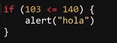
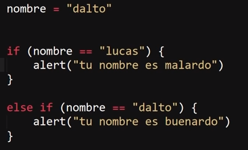
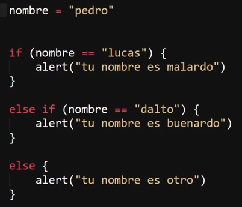

Condicionales
Son sentencias con la función de definir si un bloque de codigo se ejecuta o no, esto en funcnión de si la condicón indicada se cumple o incumple, por lo tanto son una de las principales sentencias responsables del comportamiento de la paguina en base a las circunstancias de uso.
If( )
Realmente este condicional es bastante simple, significa "si se cumple haz esto" y indica que si la condición expresada dentro de los parentesis se cumple, el bloque de codifgo expresado dentro del condicional se ejecutara, de lo contrario, si no se cumple la condición el If y el bloque de codigo albergado dentro de este seran ignorados por el programa.
Ejemplo

En este Ejemplo el el bloque de codigo dentro del "If", en este caso una alerta, si llega a ejecutarse, ya que la condicón expresada se cumple (103 <= 140), de lo contrario el programa ubiese continuado con su ejecución ignorando este bloque de codigo.
Nota: If se trata de la condicón principal, por lo que se le puede considerar un condicional de apertura, por lo tanto solo debe haber uno por cada estructura de condiciones.
Else If
Este segundo condicional complemeta al anterior, su significado es "si no se cumple haz esto" su función es la de enlazar una segunda condición para los casos en los que la condición principal no se cumpla, y de cumplirse esta segunda condición, entonces el bloque de codigo expresado dentro de "Else If" se ejecutara, de lo contrario al igual que el "If" sera ignorado.

En este ejmplo la condición principal no llega a ser cumplida (If), pero en su lugar la segunda condición (Else If) si se cumple por lo que se ejecuta el codigo albergado dentro de este.
Esta expresión puede ser empleada las veces que sean necesarias, es decir si no se cumple la condición principal se pueden presar todas las alternatias que se deseen hasra que agluna se cumpla.
Else
Este ultimo condicional se le puede considerar la expresión de sierre de la estructura de condiciones, su significado es "entonces" su función es la de contener un bloque de codigo que se ejecute en caso de que ninguna de las anteriores condiciones (presentadas en "If" y en "Else If") llegue a cumplirse, razon por la cual este condicional no posee una condición que lo active, simplemte se ejecuta en caso de que ninguna condicón se cumpla.

En este ejmplo no se cumple la condición del If ni del Else If, por lo que se ejecuta el bloque de codigo expresado dentro de Else